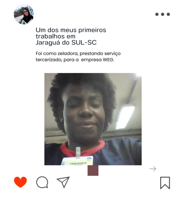
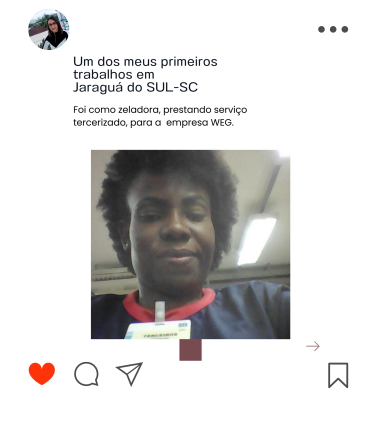
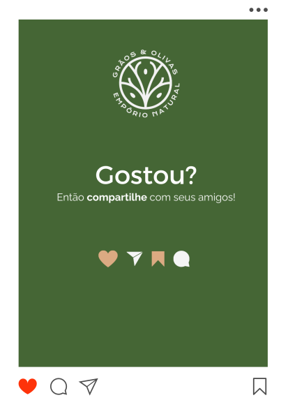
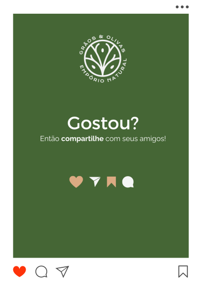

Olá, meu nome é Amanda e sou uma designer gráfica apaixonada por criar visuais incríveis. Neste portfólio, você vai encontrar alguns dos meus trabalhos mais recentes e inspiradores, que mostram a minha criatividade, habilidade e versatilidade. Espero que você goste do que vê e fique à vontade para entrar em contato comigo se tiver alguma dúvida ou feedback.

01
logotipo
Empresa Belink Sublimação
02
Trabalho Voluntário
Carrossel Biografia para instagram
03
Trabalho para Agência de Marketing
Carrossel Minimalista, produtos naturais.
A belink sublimação é uma empresa que oferece produtos personalizados com qualidade e criatividade. A logo da belink sublimação foi criada por mim, uma designer apaixonada por arte e cores. Eu escolhi as cores quentes para transmitir alegria, energia e dinamismo, características que representam a essência da empresa. O formato da belink é um triângulo invertido com cores quentes que representam a arte e a alegria, e uma das pontas está aberta como se fosse um jato de tinta, simbolizando a personalização e a inovação.
Belink sublimação: a arte de personalizar com estilo e bom gosto.


Um dos meus projetos voluntários foi criar um carrossel para o Instagram sobre a vida de uma líder comunitária que representa um trabalho social importante na sua cidade. O desafio desse projeto foi sintetizar as informações e as imagens de forma atraente e informativa, sem perder a essência da história. Para isso, eu usei técnicas de design gráfico, edição de texto e escolha de cores, fontes e elementos visuais. O resultado foi um carrossel que combinou textos e imagens de forma harmoniosa e elegante, captando a atenção e a emoção do público. Esse foi um projeto que me deu muito orgulho e satisfação, pois além de demonstrar as minhas habilidades como designer, também contribuiu para divulgar e valorizar o trabalho social da líder comunitária.

 



O próximo trabalho que eu vou mostrar foi desenvolvido para uma agência de marketing, onde eu fui contratado como designer. O projeto consistia em criar um carrossel minimalista para o Instagram, promovendo os produtos de pré treino de uma loja de produtos naturais. O desafio desse projeto foi destacar os benefícios e as características dos produtos, usando um design simples, limpo e moderno. Para isso, eu usei cores da logo, e imagens de alta qualidade. O resultado foi um carrossel que chamou a atenção dos seguidores da loja, gerando engajamento, interesse e vendas. Esse foi um projeto que me deu muito prazer e reconhecimento, pois além de demonstrar as minhas habilidades como designer, também contribuiu para o sucesso da loja de produtos naturais.

 

Obrigada por visitar o meu portfólio. Espero que você tenha se inspirado com os meus projetos. Se você precisar de uma designer criativa, profissional e apaixonada, entre em contato comigo. Eu estou pronta para transformar as suas ideias em realidade.

Marketing Digital- Designer Gráfico
(47) 996326464
amandapc82@gmail.com